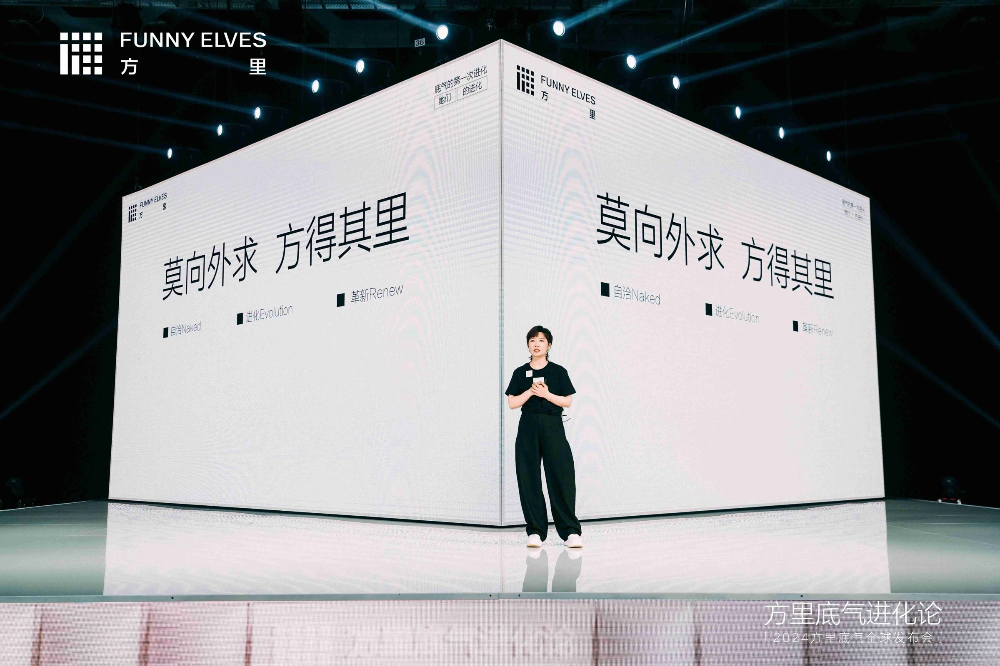
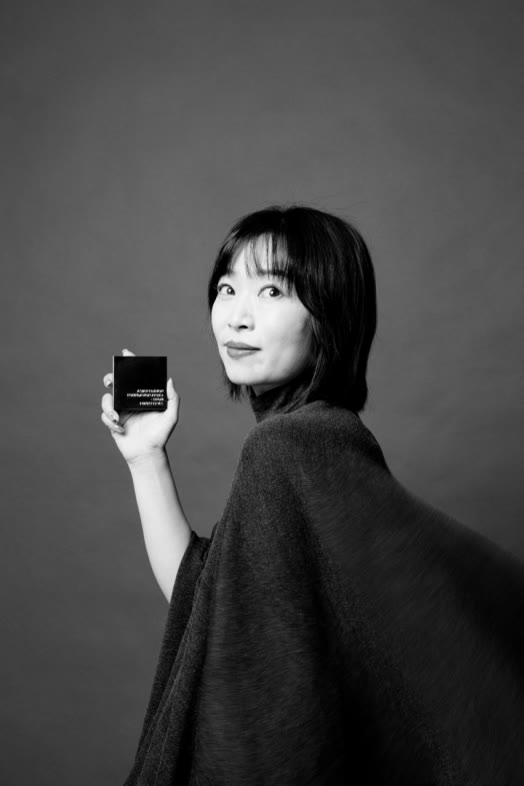
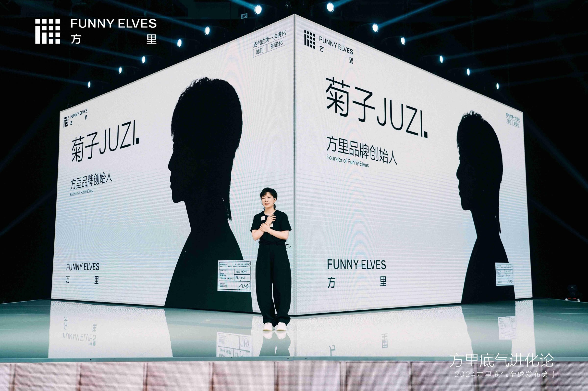
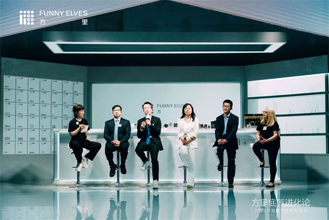
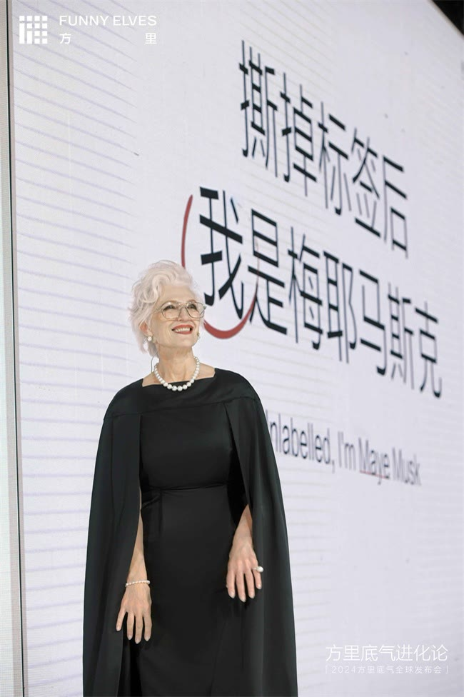
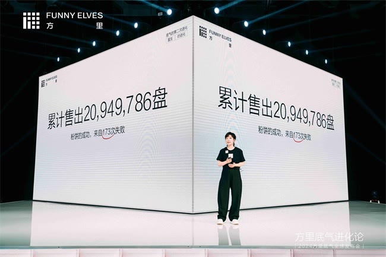
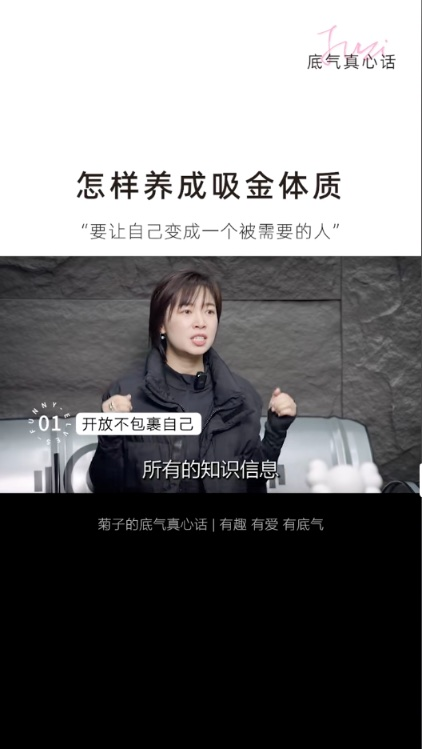

底气系列栏目
围绕“底气”搭建创始人人设。


负责创始人账号从0到1的选题、写稿与拍摄排期。

围绕“底气”搭建创始人人设。
围绕友谊、读书、金钱观做“女性智慧”内容。

按创始人行程集中拍摄，排出每周内容日历。
2023.07 — 2024.08
2024.02.19 — 2024.08.31
窗口：2023.07.01—2024.08.31；按周一至周日分箱，每格一周，颜色按窗口内发布条数分级。首末格按窗口截断；末格为2024.08.26—08.31（6天），4条。粉色描边共28个连续周区间，其中完整自然周27个。
数据：同期作品227条日期目录，按窗口筛出189条（185视频、4图文），与完整自然周104周表交叉核对；未收录、已删除或隐藏作品不在内。2023.08为已收录0条。
第三方界面与报道节点，非连续曲线；只连接2023.07.15、2023.11.29、2024.08.13三个点，不推算期间粉丝数，也不是任职边界日的净增长。
上述17条过万赞作品中有10条出自这一系列。
每颗圆点对应一条作品，粉色为底气系列的10条。窗口2023.07.01—2024.08.31；以公开显示点赞≥1万计17条，其中1条显示为“1.0万”，严格>1万为16条；舍入显示不能证明精确越过阈值。
数据：抖音作品目录核对版，2026.11.09累计显示值，非发布当日点赞。
189条 / 14个月
窗口2023.07.01—2024.08.31，按作品发布日期分月，唯一作品ID去重；包含视频与图文，不等于本人制作量。14个月合计189条，2023.08在已收录目录中为0条。
数据：抖音公开主页作品目录，2026.11.09 采集；日期范围内189条。
2024-08-13，CBNData转载聚美丽《创始人IP赛道能否跑出流量的神》记录：“底气真心话”97集、1466.5万合集播放。历史合集快照，非当前播放、非任期新增，亦不等于本人制作量。报道原文 ↗
2026-11-09核对的2024年1—8月任期内目录：155条；5月33条、6月28条，合计61条。条带按33、28、155−61=94绘制。目录可能不含删除或隐藏作品，不能视为全历史或个人拍摄次数。
代表作为团队成果

↗3.2万 赞

↗3万 赞

↗3万 赞
2026.11.09公开页面累计显示值。
巨量星图粉丝画像，2026-11-11读取：女性73%、男性27%。这里展示粉丝画像；页面未显示样本量与统计周期。
巨量星图粉丝画像，2026-11-11读取：18–23岁11.3%、24–30岁32.9%、31–40岁45.7%、41–50岁6.3%、50岁以上3.8%。24–40岁合计32.9%＋45.7%＝78.6%。条长采用0–50%的共同刻度；样本量与统计周期未显示。
巨量星图粉丝城市榜，2026-11-11读取：杭州14.7%、上海14.1%、深圳14%、北京13.5%、广州12.9%。条长采用0–15%的共同刻度，保留页面原显示值；城市图的分母、样本量及统计周期未显示，不把这些比例与省份图合并或相加推算全体粉丝占比。
巨量星图，2026-11-11读取；近30天、个人视频，未勾选排除营销流量。播放量中位数13.9万，优于99.5%同类达人；互动率10%，优于80.77%。条长表示“优于同类达人”的百分比；平台未显示具体起止日。属于账号近期表现，不等同于任期成绩。
巨量星图，2026-11-11读取：月连接用户53.7万、月深度用户17万；起止日及两项人数的具体去重定义未显示，不推算转化率。
2026-11-11读取：抖音（巨量星图）17.2万粉丝；小红书主页3.5万粉丝、获赞与收藏15万。小红书311篇笔记来自指定账号搜索卡，主页笔记标签未显示总数。均为页面显示值，不能跨平台相加作去重受众；粉丝条长使用同一比例尺。
底妆品牌“方里”创始人IP